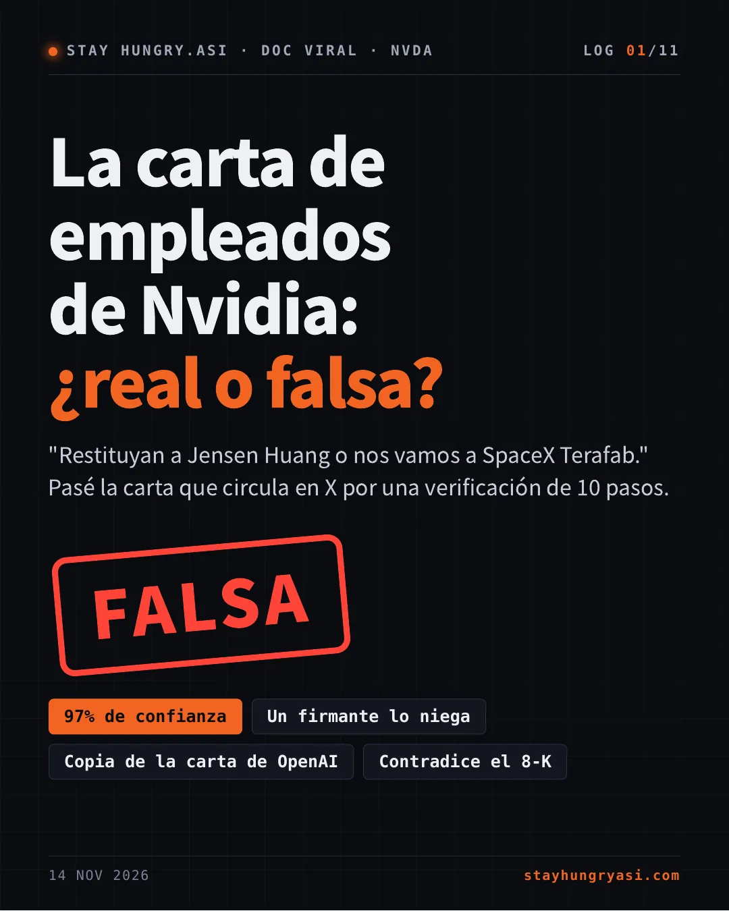
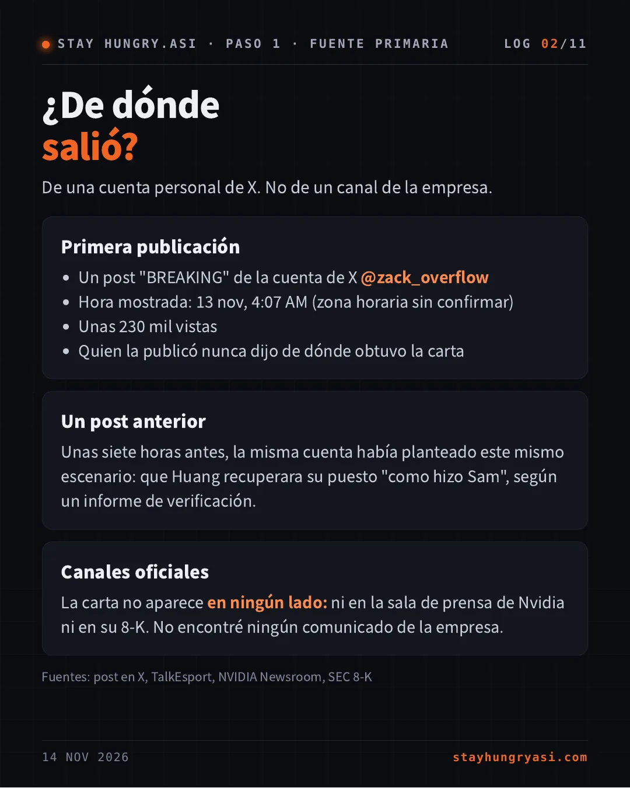
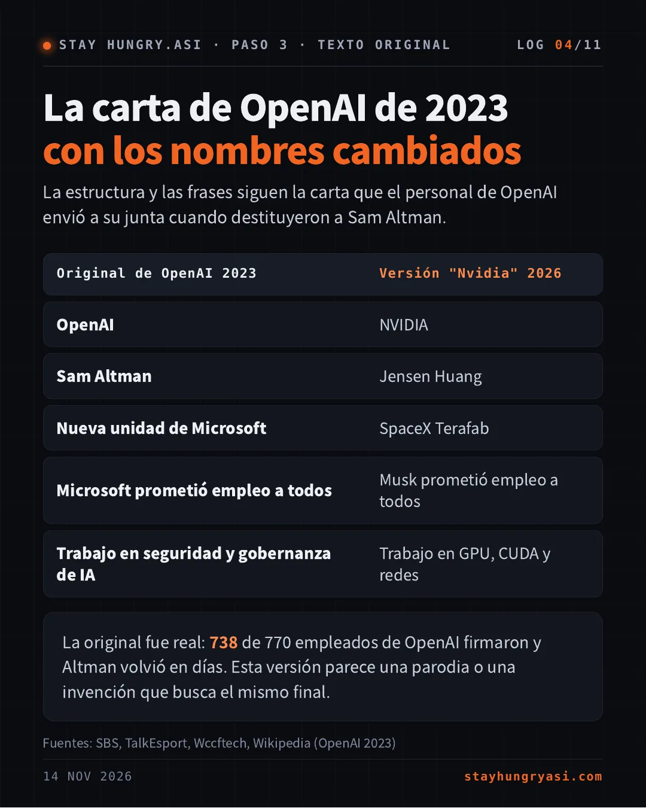
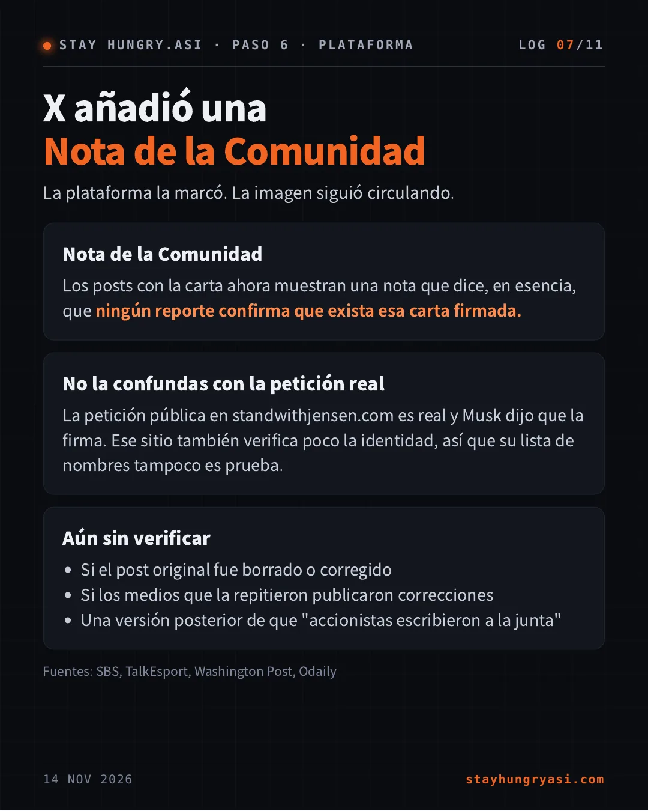
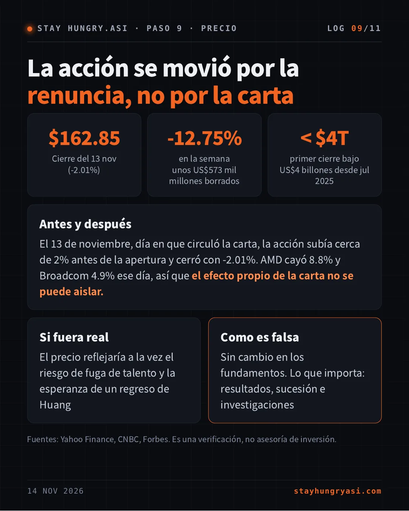
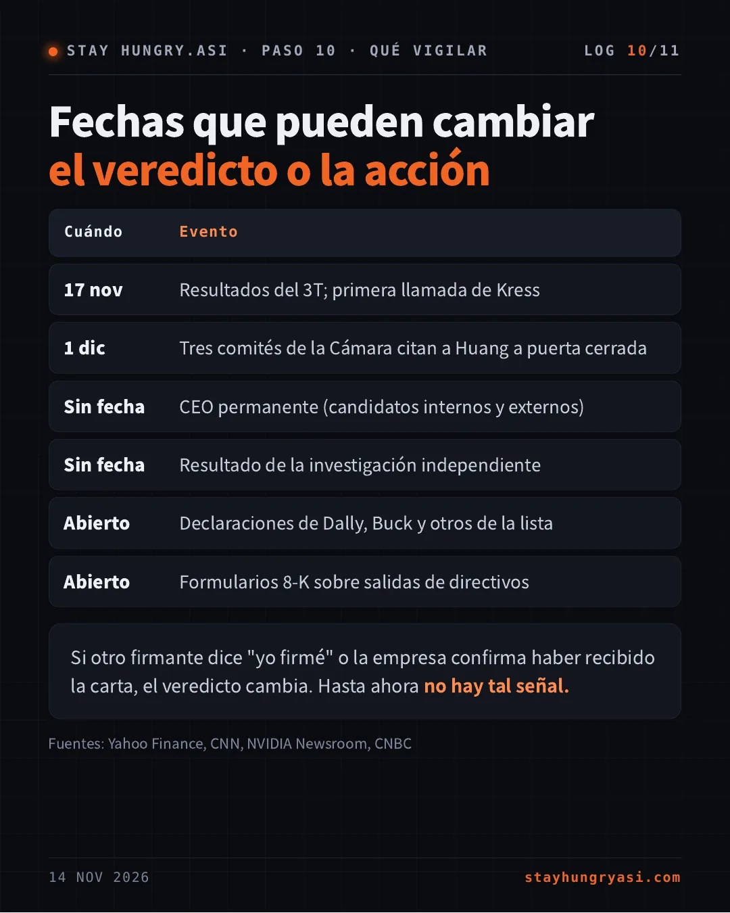
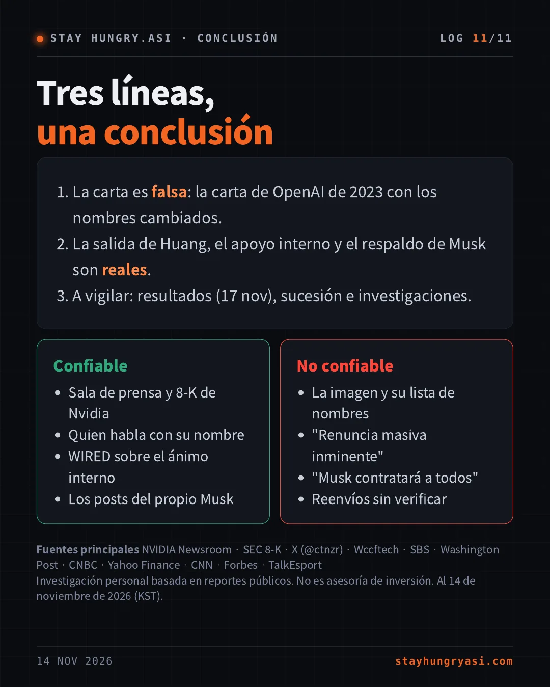

Datos al 14 de noviembre de 2026 (hora de Corea), cierre de EE. UU. del 13 de noviembre · stayhungryasi.com
Convenciones: las cifras y declaraciones son hechos según las fuentes. El '97% de confianza' es un juicio subjetivo del autor. Lo que no se pudo confirmar aparece como sin datos o sin verificar. En una revisión a las 22:00 del 14 de noviembre (hora de Corea) no había declaraciones públicas de ningún nombre de la lista aparte de Catanzaro. No es asesoría de inversión.
Lo esencial en 11 tarjetas. Toca una imagen para ampliarla.
De una cuenta personal de X. No de un canal de la empresa.
Unas siete horas antes, la misma cuenta había planteado este mismo escenario: que Huang recuperara su puesto "como hizo Sam", según un informe de verificación.
La carta no aparece en ningún lado: ni en la sala de prensa de Nvidia ni en su 8-K. No encontré ningún comunicado de la empresa.
Fuentes: post en X, TalkEsport, NVIDIA Newsroom, SEC 8-K
De los seis nombres visibles en la imagen, uno ha hablado. Lo negó.
| Aparece como firmante | Postura pública |
|---|---|
| Bryan Catanzaro (VP) | [NIEGA] No firmó |
| Bill Dally (científico jefe) | [SILENCIO] |
| Ian Buck (cómputo acelerado) | [SILENCIO] |
| Michael Kagan (CTO) | [SIN DATOS] |
| Tim Costa | [SIN DATOS] |
| Chris Malachowsky (cofundador) | [SIN DATOS] |
| Elon Musk (el "garante") | [APARTE] Otra petición |
Catanzaro llamó a la carta "obviously fake" en X y respaldó a la CEO interina Colette Kress. Fuentes: X (@ctnzr), Wccftech, VGTimes, SBS
La estructura y las frases siguen la carta que el personal de OpenAI envió a su junta cuando destituyeron a Sam Altman.
| Original de OpenAI 2023 | Versión "Nvidia" 2026 |
|---|---|
| OpenAI | NVIDIA |
| Sam Altman | Jensen Huang |
| Nueva unidad de Microsoft | SpaceX Terafab |
| Microsoft prometió empleo a todos | Musk prometió empleo a todos |
| Trabajo en seguridad y gobernanza de IA | Trabajo en GPU, CUDA y redes |
La original fue real: 738 de 770 empleados de OpenAI firmaron y Altman volvió en días. Esta versión parece una parodia o una invención que busca el mismo final.
Fuentes: SBS, TalkEsport, Wccftech, Wikipedia (OpenAI 2023)
Los restos del original copiado chocan con el registro público.
| La carta afirma | El registro muestra |
|---|---|
| La junta "despidió" a Huang | 8-K: la junta aceptó su renuncia |
| La junta no dio fundamento | 8 nov: se anunció una investigación independiente |
| Los líderes pidieron la renuncia de la junta | Ningún reporte lo indica |
| Huang y Musk dirigen Terafab | Ningún anuncio lo indica |
| Musk garantizó empleo a todos | No hay tal declaración |
Terafab sí existe: es un proyecto de chips de Tesla y SpaceX.
Fuentes: SEC 8-K (presentado el 12 nov), NVIDIA Newsroom, Washington Post
La misma carta, estándares muy distintos.
Wccftech, SBS, TalkEsport, VGTimes, Crypto Briefing
La reportaron como falsa, citando el desmentido y el parecido con OpenAI
Interesting Engineering, TokenPost
La describieron con una advertencia clara sobre su autenticidad
The Standard (HK), ChainCatcher
Publicaron "cientos firmaron" como un hecho
El Washington Post cubrió solo la petición aparte que firmó Musk. No encontré ninguna agencia importante que diera esta carta por real.
La plataforma la marcó. La imagen siguió circulando.
Los posts con la carta ahora muestran una nota que dice, en esencia, que ningún reporte confirma que exista esa carta firmada.
La petición pública en standwithjensen.com es real y Musk dijo que la firma. Ese sitio también verifica poco la identidad, así que su lista de nombres tampoco es prueba.
Fuentes: SBS, TalkEsport, Washington Post, Odaily
97% de confianza. El 3% restante: Dally, Buck y los demás aún no hablan
| CIERTO AUNQUE LA CARTA SEA FALSA |
|---|
| Huang renunció; Kress es CEO interina (anunciado el 12 nov) |
| Un post interno por su regreso sumó más de 1,600 comentarios (WIRED) |
| Musk apoya su regreso; contratarlo "sería un honor" |
| AFIRMACIONES QUE SOLO ESTÁN EN LA CARTA |
|---|
| Una carta firmada por altos ejecutivos que amenazan con irse |
| Musk garantizando empleo a cada empleado de Nvidia |
| Un "despido" y negociaciones de mala fe de la junta |
El 13 de noviembre, día en que circuló la carta, la acción subía cerca de 2% antes de la apertura y cerró con -2.01%. AMD cayó 8.8% y Broadcom 4.9% ese día, así que el efecto propio de la carta no se puede aislar.
El precio reflejaría a la vez el riesgo de fuga de talento y la esperanza de un regreso de Huang
Sin cambio en los fundamentos. Lo que importa: resultados, sucesión e investigaciones
Fuentes: Yahoo Finance, CNBC, Forbes. Es una verificación, no asesoría de inversión.
| Cuándo | Evento |
|---|---|
| 17 nov | Resultados del 3T; primera llamada de Kress |
| 1 dic | Tres comités de la Cámara citan a Huang a puerta cerrada |
| Sin fecha | CEO permanente (candidatos internos y externos) |
| Sin fecha | Resultado de la investigación independiente |
| Abierto | Declaraciones de Dally, Buck y otros de la lista |
| Abierto | Formularios 8-K sobre salidas de directivos |
Si otro firmante dice "yo firmé" o la empresa confirma haber recibido la carta, el veredicto cambia. Hasta ahora no hay tal señal.
Fuentes: Yahoo Finance, CNN, NVIDIA Newsroom, CNBC
Fuentes principales NVIDIA Newsroom · SEC 8-K · X (@ctnzr) · Wccftech · SBS · Washington Post · CNBC · Yahoo Finance · CNN · Forbes · TalkEsport
Investigación personal basada en reportes públicos. No es asesoría de inversión. Al 14 de noviembre de 2026 (KST).